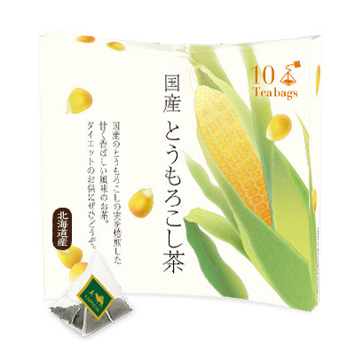
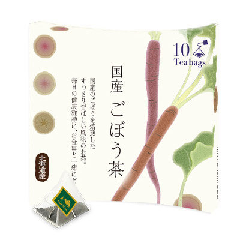
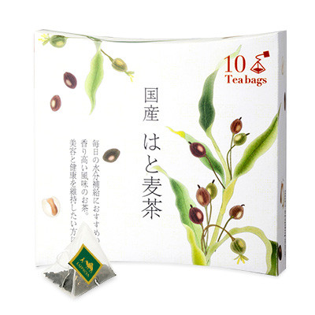
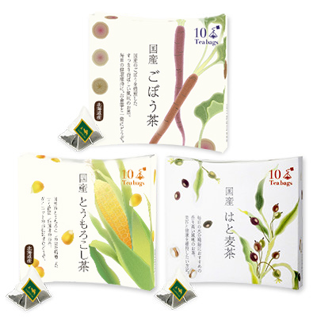

LUPICIA ONL2504 · g22922504
국산건강야채차 티백3종
【お試しセット】国産健康野菜茶 ティーバッグ3種
통신판매한정논카페인




< 通信販売限定 > 安心して毎日飲み続けていただきたいという思いから、国産野菜を丁寧に焙煎して作った、安心・安全、おいしさにこだわった国産健康野菜茶の3種のお試しセットです。元気な体づくりを応援します。
栄養や食物繊維が豊富なとうもろこしの実を焙煎した「とうもろこし茶」をはじめ、出す力で毎日の快適なリズムをサポートする「ごぼう茶」、美容と健康維持におすすめの「はと麦茶」、人気の国産健康野菜茶3種のお試しセット。
各ティーバッグ10個入です。
- 상품번호
- ONL2504
- 가격
- 2,140円
- 판매 안내
- ※통신 판매 한정 판매
※상미기한：제조일로부터1년（국산 옥수수차、국산 우엉차）、제조일로부터2년（국산 율무차）
※9705 국산 율무차：이쪽의 상품에는, 임신중에 피해 주신 것이 좋다고 말해지고 있는 허브가 포함되어 있습니다.사용 시에는 의사와 상담하시기를 권합니다.
※9713とうもろこし茶は、2019년5월、더욱 맛있게 리뉴얼했습니다.
※9714ごぼう茶は、2019년11월、더 마시기 편하게 리뉴얼했습니다.
다른 포장
보관된 상품 정보 갱신일: 2026-11-25